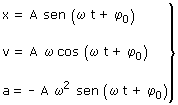

|
Fase temporal  Posición, velocidad y aceleración dependen de (ωt + φ0) que a su vez depende del tiempo. A medida que pasa el tiempo la fase crece y cuando está alcanza un valor multiplo de 2·π los valores vuelven a repetirse En general la fase se puede poner como: φ + k·2·π
Fase y estado del móvil |